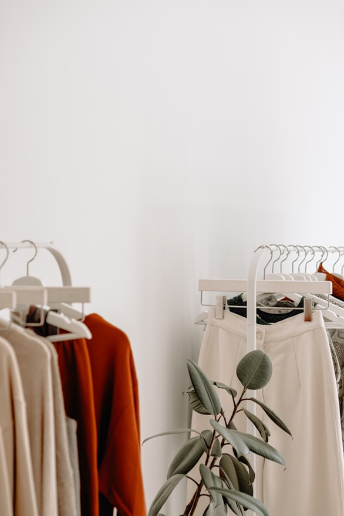
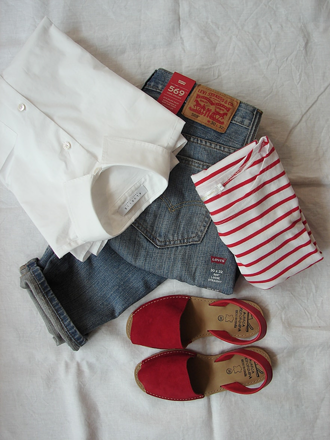

<!DOCTYPE html>
<html lang="en">
<head>
    <meta charset="UTF-8">
    <meta http-equiv="X-UA-Compatible" content="IE=edge">
    <meta name="viewport" content="width=device-width, initial-scale=1.0">
    <title>Document</title>
    <link rel="stylesheet" href="./css/slick.css">
    <link rel="stylesheet" href="./css/slick-theme.css">
    <link rel="stylesheet" href="./css/style.css">
</head>
<body>
    <div class="headerWrap">
        <div class="header pc">
            <div class="inner">
                <div class="logo">
                    
                </div>
                <ul>
                    <li>Archive</li>
                    <li>Tip</li>
                    <li class="ac">Article</li>
                    <li>About</li>
                </ul>
                <div class="rightBtn">
                    <div class="digitalLabel">
                        Digital Label
                    </div>
                    <div class="user">
                        <span>로그인</span>
                    </div>
                </div>
            </div>
        </div>
        <div class="header mo">
            <div class="inner">
                <div class="menuBtn">
                    <span></span>
                    <span></span>
                    <span></span>
                </div>
                <div class="logo">
                    
                </div>
                <div class="searchBtn">
                    <svg width="24" height="24" viewBox="0 0 24 24" fill="none" xmlns="http://www.w3.org/2000/svg">
                        <path d="M20.9998 21.0008L15.8028 15.8038M15.8028 15.8038C17.2094 14.3972 17.9996 12.4895 17.9996 10.5003C17.9996 8.51108 17.2094 6.60336 15.8028 5.19678C14.3962 3.79021 12.4885 3 10.4993 3C8.51011 3 6.60238 3.79021 5.19581 5.19678C3.78923 6.60336 2.99902 8.51108 2.99902 10.5003C2.99902 12.4895 3.78923 14.3972 5.19581 15.8038C6.60238 17.2104 8.51011 18.0006 10.4993 18.0006C12.4885 18.0006 14.3962 17.2104 15.8028 15.8038Z" stroke="#F4F4F4" stroke-width="1.5" stroke-linecap="round" stroke-linejoin="round"/>
                    </svg>
                </div>
            </div>

            <!-- .menuBtn 클릭이벤트 시 mobileMenu요소에 .ac 토글(숨김/노출) -->
            <div class="mobileMenu">
                <div class="panel">
                    <div class="top">
                        <div class="backArr"></div>
                        <div class="flexBx">
                            <div>
                                <div class="user">
                                    <span><a href="">로그인</a>해 주세요</span>
                                </div>
                            </div>
                        </div>
                    </div>
                    <div class="menuList">
                        <ul>
                            <li>Archive</li>
                            <li>Tip</li>
                            <li>Article</li>
                            <li>About</li>
                            <li class="maker">
                                
                            </li>
                        </ul>
                    </div>
                    <div class="bottom">
                        <p class="desc">
                            LONG LABEL의 모든 콘텐츠는 저작권법의 보호를 받으며,<br/>
                            무단 전재, 복사, 배포를 금합니다.
                        </p>
                        <div class="copyright">
                            COPYRIGHT ⓒ LONG LABEL. All Rights Reserved.
                        </div>
                    </div>
                </div>
                <div class="dim"></div>
            </div>

        </div>
        <div class="headerBack"></div>
    </div>

    
    <!-- PC용 -->
    <div class="pageBack">
        <div class="inner">
            <a href="#">
                <svg width="24" height="24" viewBox="0 0 24 24" fill="none" xmlns="http://www.w3.org/2000/svg">
                    <path d="M15.5 19.5L8 12L15.5 4.5" stroke="#151515" stroke-width="1.5" stroke-linecap="round" stroke-linejoin="round"/>
                </svg>
            </a>
            Article
        </div>
    </div>

    <!-- MO용 -->
    <div class="pageNav">
      <a href="#" class="arr"></a>
      <div class="tit">Article</div>
    </div>
    
    <div class="hero">
        <div class="inner">
            <div class="whiteBar">
                <div class="date">2025.06.25</div>
                <div class="left">
                    <!-- <div class="profile imgWrap">
                        
                    </div> -->
                    <div>
                        <div class="name">제목을 적어주세요</div>
                        <!-- <div class="subname">Brand name</div> -->
                    </div>
                </div>
                <label class="bookmark">
                    <input type="checkbox">
                    <svg width="36" height="36" viewBox="0 0 36 36" fill="none" xmlns="http://www.w3.org/2000/svg">
                        <path d="M26.3895 4.98333C28.0395 5.17533 29.25 6.59883 29.25 8.26083V31.5003L18 25.8753L6.75 31.5003V8.26083C6.75 6.59883 7.959 5.17533 9.6105 4.98333C15.1848 4.33629 20.8152 4.33629 26.3895 4.98333Z" fill="#FF6633" stroke="#151515" stroke-width="1.5" stroke-linecap="round" stroke-linejoin="round"/>
                    </svg>
                </label>
            </div>
        </div>          
    </div>

    <div class="inner">
        <!-- <div class="text-right">
            <a href="#" class="detailLink-right">Long Label 아카이브 기준 자세히 보기</a>
        </div> -->
        <div class="mainTable">
            <div class="cell full" style="gap: 24px;">
                <div class="key" style="width: auto;">키워드</div>
                <div class="value">
                    <div class="tag">
                        <span>업사이클링</span>
                        <span>리사이클 소재</span>
                        <span>신소재/신기술</span>
                    </div>
                </div>
            </div>
            <div class="detailPage">
                <div class="note">
                    <!-- <div class="tagGroup">
                        <h3>Keyword</h3>
                        <div class="tag">
                            <a href="/stories/7"><span class="ac">업사이클링</span></a>
                            <span>친환경 패키지</span><span>폐기물 저감</span>
                        </div>
                    </div> -->
                    <div class="editor">
                        <div class="span">Editor’s Note</div>
                        <p style="margin-bottom: 0px;">오랜만에 찾은 서울 성수동 거리는 붐비고, 활기가 넘치고 있었습니다. 곳곳에 진행 중인 ‘팝업 스토어’ 앞에 긴 줄이 있기도 하고, 눈길을 끄는 이색적인 상점 디자인, 이벤트, 판촉물도 가득했어요. 이곳에 지속가능 패션은 어떻게 자리잡고 있을까요? </p>
                    </div>
                </div>
            </div>
        </div>

        
        <div class="new_articleDetail_contents">
            <article>
                <h2>1. 폴로 랄프로렌은 어떤 브랜드 인가요?</h2>
                <p>
                    랄프로렌은 1967년 뉴욕에서 시작한 브랜드예요. 아메리칸 클래식을 대표하는 브랜드죠. 뉴욕의 직장인을 위한 넥타이로 시작해 남성 의류, 여성 의류로 확대 런칭하며 지금의 랄프로렌이 되었어요. 가장 대표적인 폴로 랄프 로렌부터 랄프로렌 퍼플 라벨, 로렌 랄프로렌 등과 같은 최고가 라인 등으로 다양한 라인업으로 구성되어 있어요.랄프로렌은 UNFCCC, Fashion Pact, RE100, Ellen MacArthur Foundation 등에 가입하며 환경적 노력도 이행하고 있어요.  랄프로렌은 2040 넷제로를 목표로 2030년엔 FY20에 대비 Scope 1,2,3에서 각각 탄소 배출량을 30% 감축하겠다고 밝혔어요. 또한 2025년엔 재생에너지로 100% 전환하겠다고 밝혔죠.
                    2025년까지 순환 경제 구조를 랄프로렌에 정착시키기 위해 대표 제품 중 다섯 가지는 C2C(Cradle to Cradle) 인증을 받고 주요 도시들부터 제품 대여, 수선 및 재순환이 가능하도록 제도를 구축할 것을 약속했어요.
                </p>

                <div class="slideImg">
                    <div>
                        <div class="imgBox"></div>
                    </div>
                    <div>
                        <div class="imgBox"></div>
                    </div>
                    <div>
                        <div class="imgBox"></div>
                    </div>
                </div>
            </article>
            <article>
                <h2>1. 폴로 랄프로렌은 어떤 브랜드 인가요?</h2>
                <p>
                    랄프로렌은 1967년 뉴욕에서 시작한 브랜드예요. 아메리칸 클래식을 대표하는 브랜드죠. 뉴욕의 직장인을 위한 넥타이로 시작해 남성 의류, 여성 의류로 확대 런칭하며 지금의 랄프로렌이 되었어요. 가장 대표적인 폴로 랄프 로렌부터 랄프로렌 퍼플 라벨, 로렌 랄프로렌 등과 같은 최고가 라인 등으로 다양한 라인업으로 구성되어 있어요.랄프로렌은 UNFCCC, Fashion Pact, RE100, Ellen MacArthur Foundation 등에 가입하며 환경적 노력도 이행하고 있어요.  랄프로렌은 2040 넷제로를 목표로 2030년엔 FY20에 대비 Scope 1,2,3에서 각각 탄소 배출량을 30% 감축하겠다고 밝혔어요. 또한 2025년엔 재생에너지로 100% 전환하겠다고 밝혔죠.
                    2025년까지 순환 경제 구조를 랄프로렌에 정착시키기 위해 대표 제품 중 다섯 가지는 C2C(Cradle to Cradle) 인증을 받고 주요 도시들부터 제품 대여, 수선 및 재순환이 가능하도록 제도를 구축할 것을 약속했어요.
                </p>

                <div class="slideImg">
                    <div>
                        <div class="imgBox"></div>
                    </div>
                    <div>
                        <div class="imgBox"></div>
                    </div>
                    <div>
                        <div class="imgBox"></div>
                    </div>
                </div>
            </article>
        </div>    
    </div>

    <div class="detailPage">
        <div class="inner">
            <div class="article"><div class="longlabel">의 해석</div><div class="item"><p style=" font-size: 17px;">지속가능성을 추구하는 브랜드에게도 팝업 스토어는 매력적인 마케팅 수단입니다. 소비자에게 낯선 재활용 소재나 친환경적인 신소재를 직접 체험할 수 있도록 하고 지속가능한 방식에 대한 다양한 형태로 전달할 수 있을 테니까요. 하지만 잠깐 운영되고 버려지는 일회용 공간이 될 수 있다는 점에서 모순점 역시 존재할 수 있어요.
                친환경을 단순히 마케팅 수단으로 사용하는 그린워싱(Greenwashing)을 예방하기 위해서는 팝업 스토어 역시 더 지속가능한 방식으로 운영할 수 있도록 기획 단계부터 치밀한 준비가 필요해 보입니다.
                팝업 스토어에서 전달하는 선물과 흥미진진한 경험의 즐거움 외에 일회용 쓰레기가 가득하다는 사실에 안타까워하는 많은 소비자가 있으니까요.
            
            
                editor. 토란</p></div></div>
            <div class="ref"><h5>관련자료</h5><div class="item">
                <p style=" overflow-wrap: break-word;">
                    1. 팝업 스토어, 갑자기 나타나 만들어지는 폐기물<br/>
                    이우섭,  “더현대서울 팝업 성공의 비결, 이희석 유스팀 팀장이 말한다”, 패션포스트, 2024.07.24.,<br/>
                    <a class="link" href="https://www.hani.co.kr/arti/society/society_general/1163387.html" target="_blank">https://www.hani.co.kr/arti/society/society_general/1163387.html</a><br/>
                    스위트스팟, “2024년 상반기 팝업스토어 총결산”, 2024.9.5., <a class="link" href="https://brunch.co.kr/" target="_blank">https://brunch.co.kr/</a>@aa900145064d44a/1<br/>
                    지혜진, “반짝이는 팝업 스토어 … 문 닫을 땐 트럭 7대 폐기물 ‘청구서’”, 매일경제, 2024.10.3.,<br/>
                    <a class="link" href="https://www.mk.co.kr/news/society/11131079?utm_source=chatgpt.com" target="_blank">https://www.mk.co.kr/news/society/11131079?utm_source=chatgpt.com</a><br/>
                    박고은, “‘팝업 성지’ 성수동, 1년 폐기물 500톤 몸살…전문가 “대책 필요””, 2024.10.20., 한겨레, <a class="link" href="https://www.hani.co.kr/arti/society/society_general/1163387.html" target="_blank">https://www.hani.co.kr/arti/society/society_general/1163387.html</a><br/>
                    <br/>
                    2. 팝업 스토어의 변화를 위한 움직임<br/>
                    최태범, “반짝 사라지는 '팝업스토어'…아까운 자재 재활용 나선 스타트업”, 2025.4.16., 유니콘팩토리,  <a class="link" href="https://www.unicornfactory.co.kr/article/2025041615343758477" target="_blank">https://www.unicornfactory.co.kr/article/2025041615343758477</a><br/>
                    최호경, “스위트스팟, "팝업 폐기물 재활용 시스템 구축", 2025.4.16., 아시아경제,<br/>
                    <a class="link" href="https://www.asiae.co.kr/article/smb-venture/2025041609441560292?utm_source=chatgpt.com" target="_blank">https://www.asiae.co.kr/article/smb-venture/2025041609441560292?utm_source=chatgpt.com</a><br/>
                    buildweller 홈페이지, <a class="link" href="https://builddweller.com/aboutstoresolution" target="_blank">https://builddweller.com/aboutstoresolution</a><br/>
                    박종일, “성동구, 팝업스토어 운영자 위한 '팝업 가이드북' 제작”, 아시아경제, 25.4.22., <a class="link" href="https://www.asiae.co.kr/article/2025042207294161190?utm_source=chatgpt.com" target="_blank">https://www.asiae.co.kr/article/2025042207294161190?utm_source=chatgpt.com</a><br/>
                    연합뉴스, “성동구 '팝업스토어 매뉴얼' 제작…"폐기물·소음 해법 모색"”, 2024.6.19., 파이낸셜뉴스, <a class="link" href="https://www.fnnews.com/news/202406191847190718?utm_source=chatgpt.com" target="_blank">https://www.fnnews.com/news/202406191847190718?utm_source=chatgpt.com</a><br/>
                    <br/>
                    3. 지속가능성을 추구하는 브랜드의 팝업 스토어<br/>
                    김민혜, “미샤, 팝업스토어 폐기물 ‘포레스트’로 업사이클링”, Beautynury, 2024.4.19., <a class="link" href="https://www.beautynury.com/news/view/104466/cat/10/page/1" target="_blank">https://www.beautynury.com/news/view/104466/cat/10/page/1</a><br/>
                    H22 홈페이지, <a class="link" href="https://h22studio.com/118" target="_blank">https://h22studio.com/118</a><br/>
                    <br/>
                    4. 지속가능한 패션 팝업 사례<br/>
                    김수식, “파츠파츠, 패션산업 미래 제로웨이스트 탐구 엿본다”, 2024.9.2., 글로벌이코노믹,<br/>
                        <a class="link" href="https://www.g-enews.com/article/Distribution/2024/09/2024090212095235190687539213_1" target="_blank">https://www.g-enews.com/article/Distribution/2024/09/2024090212095235190687539213_1</a><br/>
                    Ghalia BOUSTANI, “Harnessing Sustainable Luxury Pop-Up Stores”, Retail Focus, 2024.7.3., <a class="link" href="https://retail-focus.co.uk/harnessing-sustainable-luxury-pop-up-stores/" target="_blank">https://retail-focus.co.uk/harnessing-sustainable-luxury-pop-up-stores/</a><br/>
                    ISPO.com, , “Adidas x Parley: Run to Victory With Ocean Plastic Shoes“, 2019.8.8., <a class="link" href="https://www.ispo.com/en/news-companies/adidas-x-parley-run-victory-ocean-plastic-clothes" target="_blank">https://www.ispo.com/en/news-companies/adidas-x-parley-run-victory-ocean-plastic-clothes</a><br/>
                    Tangent Agency, “Run For The Oceans Adidas”, <a class="link" href="https://tangentagency.com/work/adidas-run-for-the-oceans-make-space-store-activation/" target="_blank">https://tangentagency.com/work/adidas-run-for-the-oceans-make-space-store-activation/</a><br/>
                    Roxanne Robinson, “Sustainable Pop-Up Concept Store Figure Eight Brings Eco-Conscious Goods To Soho”, Forbes, 2021.9.20.,<br/>
                    <a class="link" href="https://www.forbes.com/sites/roxannerobinson/2021/09/16/sustainable-pop-up-concept-store-figure-eight-brings-eco-conscious-goods-to-soho/" target="_blank">https://www.forbes.com/sites/roxannerobinson/2021/09/16/sustainable-pop-up-concept-store-figure-eight-brings-eco-conscious-goods-to-soho/</a><br/>
                    Stella McCartney, “COP28: Stella McCartney’s Sustainable Market and Charting a Path Foward”, 2023.12.1., <a class="link" href="https://www.stellamccartney.com/gb/en/COP28-UN-climate-conference-stellas-sustainable-market.html" target="_blank">https://www.stellamccartney.com/gb/en/COP28-UN-climate-conference-stellas-sustainable-market.html</a><br/>
                    Colin Smith, “Stella McCartney's Ibiza Pop-Up Uses Recycled Wood; Efficient Lighting”, 2024.7.15., TrendHunter,<br/>
                    <a class="link" href="https://www.trendhunter.com/trends/stella-mccartney-pop-up" target="_blank">https://www.trendhunter.com/trends/stella-mccartney-pop-up</a><br/>
                    심재서, “‘지속가능함을 만드는 브랜드들의 모임’ 지구랜드 팝업스토어 오픈”, 실버투데이, 2024.01.7., <a class="link" href="https://www.silvertoday.co.kr/news/articleView.html?idxno=11981" target="_blank">https://www.silvertoday.co.kr/news/articleView.html?idxno=11981</a> </p></div></div><br/>
            <div class="writing"><h5>관련 글</h5><ul class="col-3"><li class="item"><div class="imgWrap"><a href="/stories/70"></a></div><div class="text"><div class="cate">기획</div><p>알고 있나요? 울트라 패스트 패션</p></div></li><li class="item"><div class="imgWrap"><a href="/stories/68"></a></div><div class="text"><div class="cate">기획</div><p>비건이 선택하고 싶은 비건 패션 </p></div></li><li class="item"><div class="imgWrap"><a href="/stories/66"></a></div><div class="text"><div class="cate">기획</div><p>11명의 빈티지 패션 피플로부터 직접 듣는 빈티지 패션 이야기</p></div></li></ul></div>
        </div>
    </div>


    


    <div class="footer">
        <div class="inner">
            <div class="topCon">
                
                <ul>
                    <li>이용약관</li>
                    <li>개인정보처리방침</li>
                </ul>
            </div>
            <div class="bodyCon">
                <p>
                    <span>상호명&nbsp;:&nbsp;리마인드얼스</span>  |  <span>대표자&nbsp;:&nbsp;김혜림</span>  |   <span>사업자번호&nbsp;:&nbsp;645-06-01901</span>  |  <span>주소&nbsp;:&nbsp;서울특별시&nbsp;종로구&nbsp;종로&nbsp;34&nbsp;2층&nbsp;101호</span><br>
                    <span>통신판매업신고번호&nbsp;:&nbsp;2022-지역명-1234</span>  |  <span>입금계좌&nbsp;:&nbsp;국민은행&nbsp;123456678</span>  |  <span>문의&nbsp;:&nbsp;02-123-1234</span>  |  <span>메일&nbsp;:&nbsp;hello@emindearth.com</span><br>
                    롱레이블은 리마인드얼스가 운영하는 친환경 제품 임팩트 분석 플랫폼입니다.
                </p>
                
            </div>
            <span class="copyright">COPYRIGHT ⓒ LONG LABEL. All Rights Reserved.</span>
        </div>
    </div>


    

    <script src="./js/mobileToggle.js"></script>
    <script type="text/javascript" src="//code.jquery.com/jquery-1.11.0.min.js"></script>
    <script type="text/javascript" src="//code.jquery.com/jquery-migrate-1.2.1.min.js"></script>
    <script src="./js/slick.min.js"></script>
    <script type="text/javascript">
        $(document).ready(function(){
            $('.slideImg').slick({
                arrows: true,
                dots: false,
                infinite: true,
                centerMode: true,
                centerPadding: '24%',
                slidesToShow: 1,
                // cssEase: 'linear',
                responsive: [
                    {
                        breakpoint: 768,
                        settings: {
                            centerMode: false,
                            centerPadding: 0,
                        }
                    }
                ] 
            });
        });
    </script>
</body>
</html>